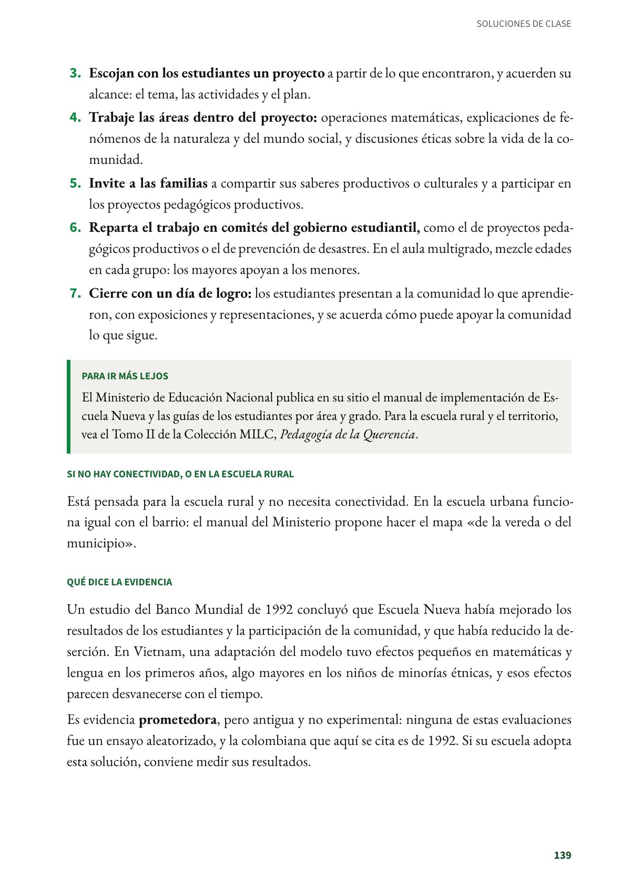
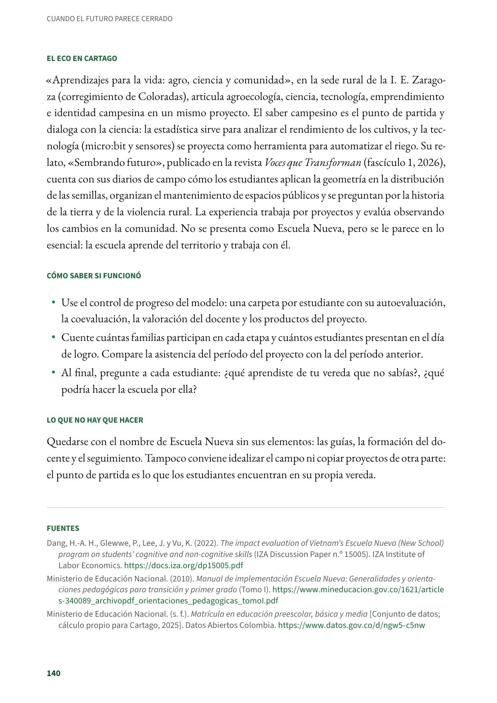
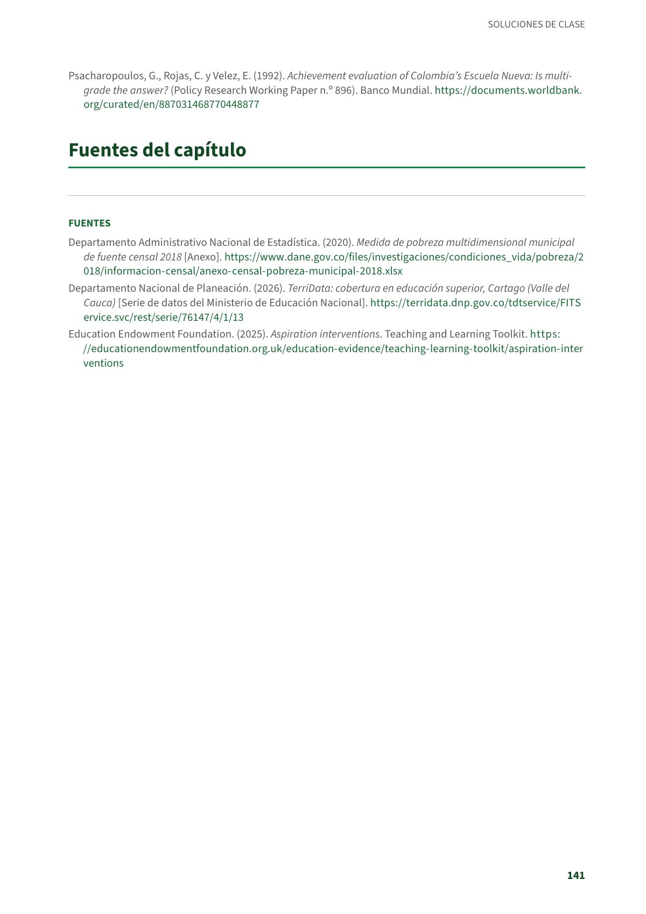

Estudiar la vereda para transformarla: proyectos con la comunidad rural, al estilo de Escuela Nueva
Escuela Nueva es un modelo colombiano para la escuela rural multigrado, en la que uno o dos docentes atienden todos los grados de la primaria. Primaria rural y aulas multigrado. Evidencia prometedora.
PDF · 4 págs. · 81 KBEn resumen
- Evidencia: prometedora.
- Para quién: Primaria rural y aulas multigrado. Con ajustes, posprimaria y secundaria rural.
- Tiempo: Un proyecto por período, con una o dos sesiones por semana y un día de logro al final.
- Materiales: Cuadernos de campo, pliegos de papel para el mapa, y las guías y el manual de Escuela Nueva del Ministerio de Educación.
- De dónde viene: Colombia: Escuela Nueva, creada en 1976 como mejora oficial de la escuela unitaria rural.
Qué es
Escuela Nueva es un modelo colombiano para la escuela rural multigrado, en la que uno o dos docentes atienden todos los grados de la primaria. Los niños trabajan en grupos con guías de aprendizaje, los mayores ayudan a los menores, la promoción es flexible, un gobierno estudiantil organiza comités de trabajo y la escuela se abre a la comunidad. Esta solución toma ese último componente: los estudiantes estudian su vereda y convierten lo que encuentran en proyectos de clase con las familias.
Según los datos de matrícula del Ministerio de Educación, en 2025 había en Cartago 118 estudiantes en Escuela Nueva, en diez sedes rurales de las instituciones educativas Zaragoza y Antonio Holguín Garcés, y otros 179 en Posprimaria rural.
Paso a paso en el aula, con los elementos de Escuela Nueva
- Dibujen el mapa de la vereda con sus características y con los grupos que existen en ella: asociaciones de vecinos, clubes y grupos culturales, ambientales o deportivos. Los estudiantes averiguan con entrevistas, encuestas y observación.
- Escriban la monografía de la vereda: recursos naturales, actividades diarias de sus habitantes, problemas sociales, organizaciones comunitarias, tradiciones culturales y actividades recreativas.
- Escojan con los estudiantes un proyecto a partir de lo que encontraron, y acuerden su alcance: el tema, las actividades y el plan.
- Trabaje las áreas dentro del proyecto: operaciones matemáticas, explicaciones de fenómenos de la naturaleza y del mundo social, y discusiones éticas sobre la vida de la comunidad.
- Invite a las familias a compartir sus saberes productivos o culturales y a participar en los proyectos pedagógicos productivos.
- Reparta el trabajo en comités del gobierno estudiantil, como el de proyectos pedagógicos productivos o el de prevención de desastres. En el aula multigrado, mezcle edades en cada grupo: los mayores apoyan a los menores.
- Cierre con un día de logro: los estudiantes presentan a la comunidad lo que aprendieron, con exposiciones y representaciones, y se acuerda cómo puede apoyar la comunidad lo que sigue.
Para ir más lejos
El Ministerio de Educación Nacional publica en su sitio el manual de implementación de Escuela Nueva y las guías de los estudiantes por área y grado. Para la escuela rural y el territorio, vea el Tomo II de la Colección MILC, Pedagogía de la Querencia.
Si no hay conectividad, o en la escuela rural
Está pensada para la escuela rural y no necesita conectividad. En la escuela urbana funciona igual con el barrio: el manual del Ministerio propone hacer el mapa «de la vereda o del municipio».
Qué dice la evidencia
Un estudio del Banco Mundial de 1992 concluyó que Escuela Nueva había mejorado los resultados de los estudiantes y la participación de la comunidad, y que había reducido la deserción. En Vietnam, una adaptación del modelo tuvo efectos pequeños en matemáticas y lengua en los primeros años, algo mayores en los niños de minorías étnicas, y esos efectos parecen desvanecerse con el tiempo.
Es evidencia prometedora, pero antigua y no experimental: ninguna de estas evaluaciones fue un ensayo aleatorizado, y la colombiana que aquí se cita es de 1992. Si su escuela adopta esta solución, conviene medir sus resultados.
El eco en Cartago
«Aprendizajes para la vida: agro, ciencia y comunidad», en la sede rural de la I. E. Zaragoza (corregimiento de Coloradas), articula agroecología, ciencia, tecnología, emprendimiento e identidad campesina en un mismo proyecto. El saber campesino es el punto de partida y dialoga con la ciencia: la estadística sirve para analizar el rendimiento de los cultivos, y la tecnología (micro:bit y sensores) se proyecta como herramienta para automatizar el riego. Su relato, «Sembrando futuro», publicado en la revista Voces que Transforman (fascículo 1, 2026), cuenta con sus diarios de campo cómo los estudiantes aplican la geometría en la distribución de las semillas, organizan el mantenimiento de espacios públicos y se preguntan por la historia de la tierra y de la violencia rural. La experiencia trabaja por proyectos y evalúa observando los cambios en la comunidad. No se presenta como Escuela Nueva, pero se le parece en lo esencial: la escuela aprende del territorio y trabaja con él.
Cómo saber si funcionó
- Use el control de progreso del modelo: una carpeta por estudiante con su autoevaluación, la coevaluación, la valoración del docente y los productos del proyecto.
- Cuente cuántas familias participan en cada etapa y cuántos estudiantes presentan en el día de logro. Compare la asistencia del período del proyecto con la del período anterior.
- Al final, pregunte a cada estudiante: ¿qué aprendiste de tu vereda que no sabías?, ¿qué podría hacer la escuela por ella?
Lo que no hay que hacer
Quedarse con el nombre de Escuela Nueva sin sus elementos: las guías, la formación del docente y el seguimiento. Tampoco conviene idealizar el campo ni copiar proyectos de otra parte: el punto de partida es lo que los estudiantes encuentran en su propia vereda.
Fuentes
Dang, H.-A. H., Glewwe, P., Lee, J. y Vu, K. (2022). The impact evaluation of Vietnam's Escuela Nueva (New School) program on students' cognitive and non-cognitive skills (IZA Discussion Paper n.º 15005). IZA Institute of Labor Economics. docs.iza.org
Ministerio de Educación Nacional. (2010). Manual de implementación Escuela Nueva: Generalidades y orientaciones pedagógicas para transición y primer grado (Tomo I). mineducacion.gov.co
Ministerio de Educación Nacional. (s. f.). Matrícula en educación preescolar, básica y media [Conjunto de datos; cálculo propio para Cartago, 2025]. Datos Abiertos Colombia. datos.gov.co
Psacharopoulos, G., Rojas, C. y Velez, E. (1992). Achievement evaluation of Colombia's Escuela Nueva: Is multigrade the answer? (Policy Research Working Paper n.º 896). Banco Mundial. documents.worldbank.org
Así se ve en el libro
4 páginas


